gallery of random
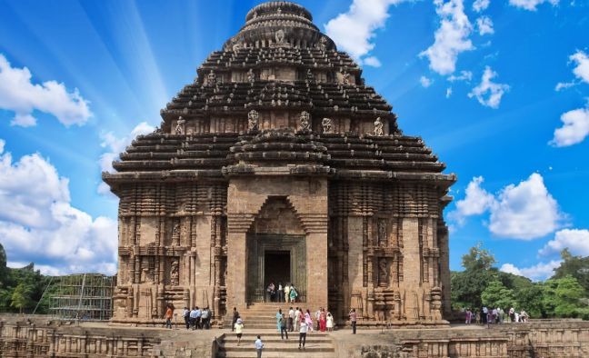
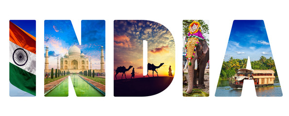
 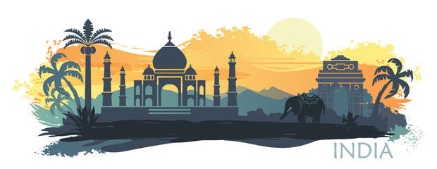
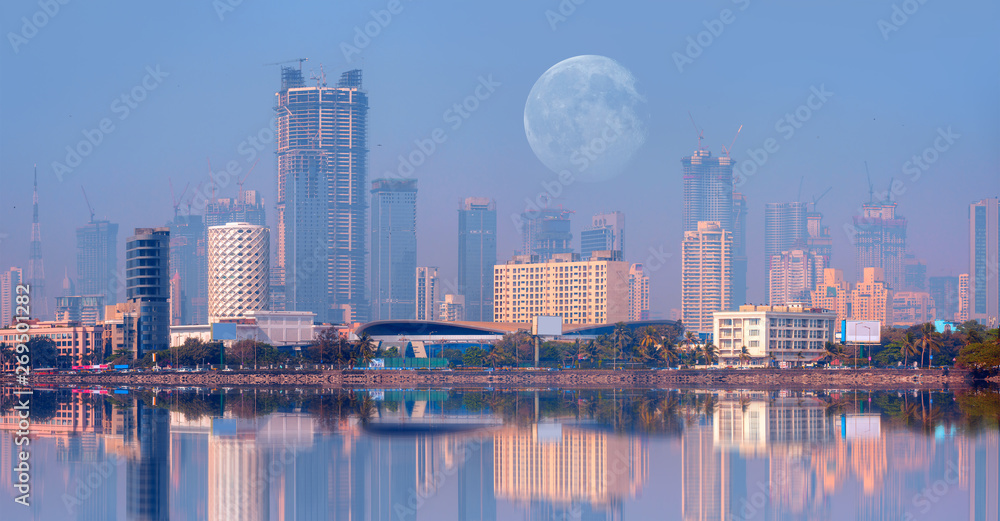
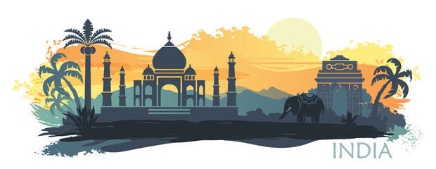
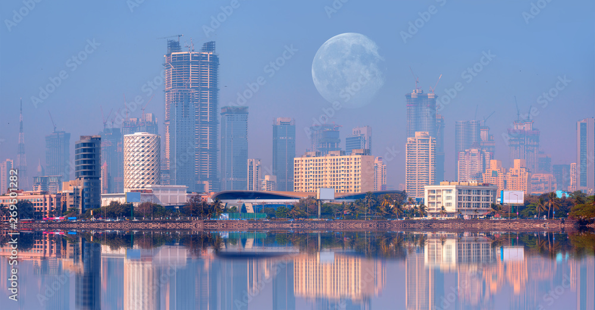

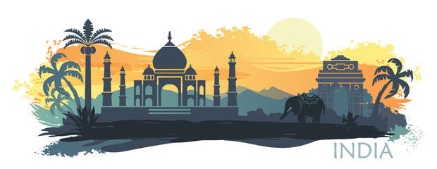
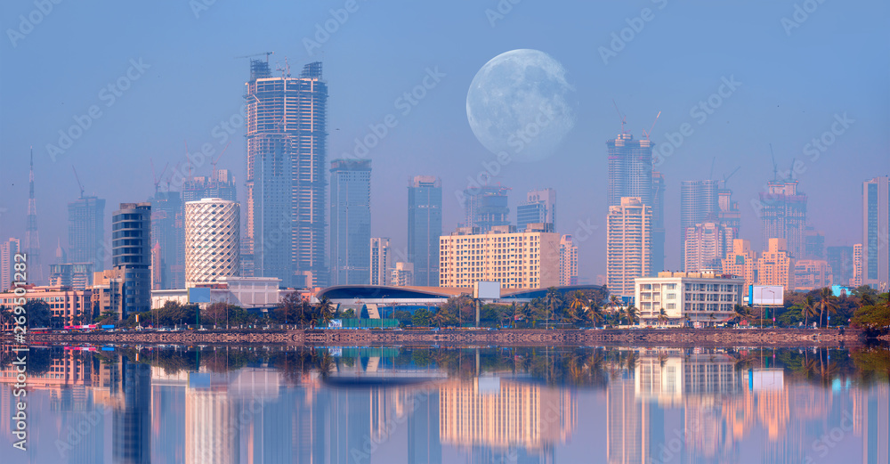
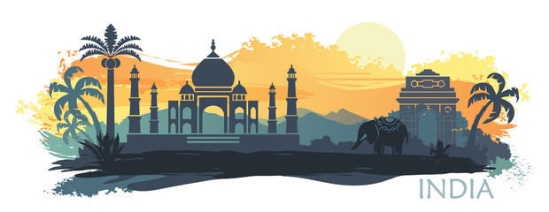
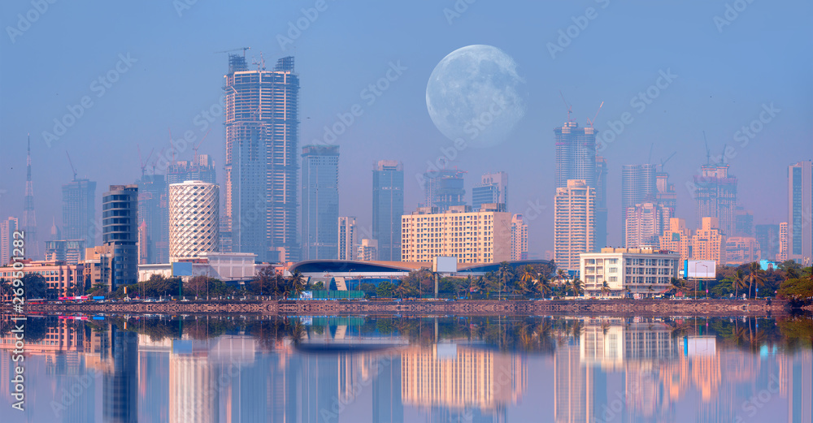
learn india with us.
The Konark Sun Temple was built in 1250 CE during the reign of the Eastern Ganga King Narsimhadeva-1 from stone in the form of a giant ornamented chariot dedicated to the Sun god, Surya. The Konark Temple was built by King Narasimha Deva I in 1244 to worship Surya, the Sun God. Konark was chosen as its place of construction because it has been described as the holy seat of Surya in various ancient texts.
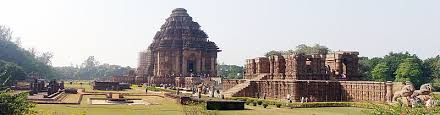it was built in 1986.The Lotus Temple, located in New Delhi, India, is a Baháʼí House of Worship that was dedicated in December 1986. Notable for its lotus-like shape, it has become a prominent attraction in the city. Like all Bahá’í Houses of Worship, the Lotus Temple is open to all, regardless of religion or any other qualification
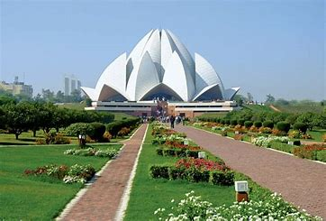it was built in 957 The First Temple was constructed during the reign of David’s son, Solomon, and completed in 957 bce
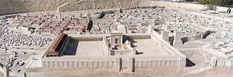